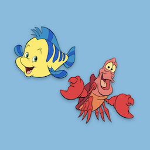

Web Programming
M
H
W
2
Quiz di personalità Disney
Domanda 1: quale fra questi abiti ti piace di più?


Domanda 2: chi è il tuo aiutante preferito?

Domanda 3: quale fra queste è la tua canzone del cuore?
Non sai quale scegliere? Non preoccuparti, clicca qui per ascoltarle subito!
Title
Il valore di data-choice-id di ogni risposta è mappato ad uno dei possibili risultati definiti da RESULTS_MAP, all’interno di constants.js. Potete accedere a RESULTS_MAP da dentro script.js perchè constants.js è incluso prima di script.js in index.html. Quando il quiz è completo, analizzate i valori di data-choice-id di ogni risposta. Ad esempio, se i valori sono blep, sleepy e blep, dovrete visualizzare il titolo e i contenuti della personalità descritta in RESULTS_MAP['blep'].
Ricomincia il quiz